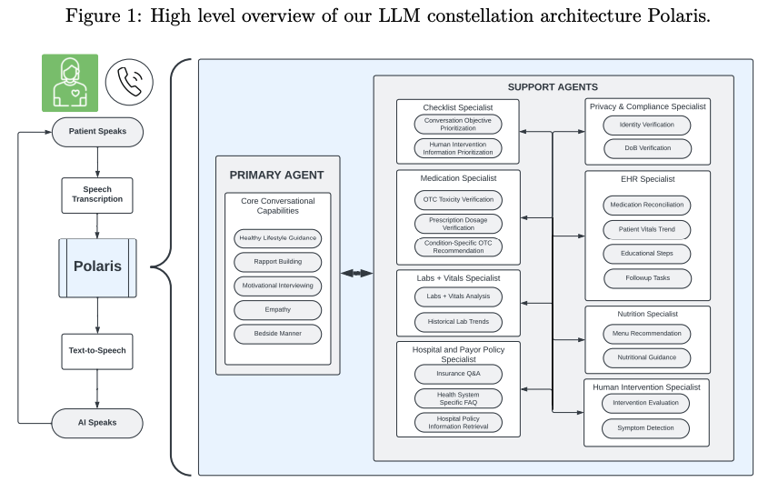
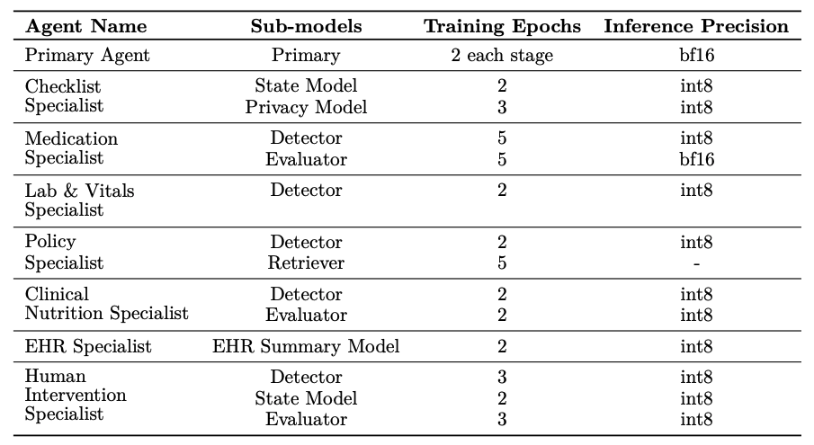
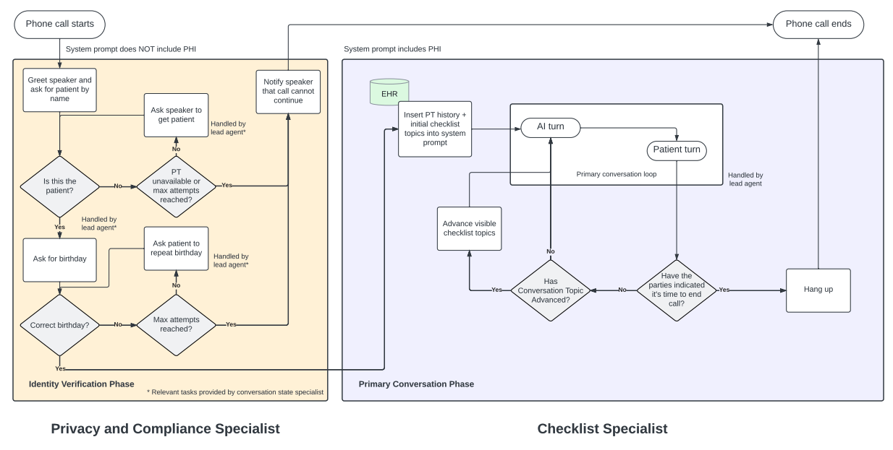
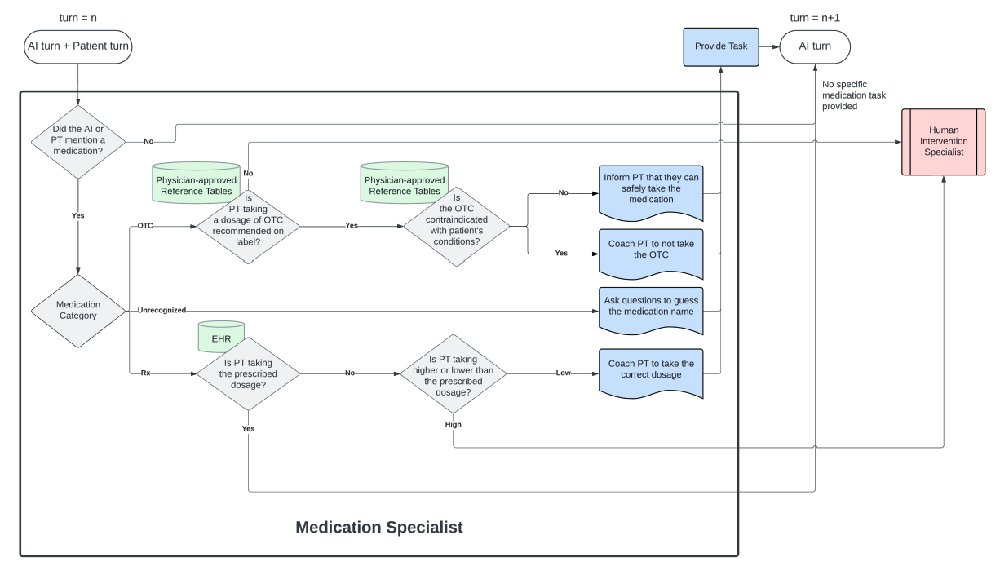
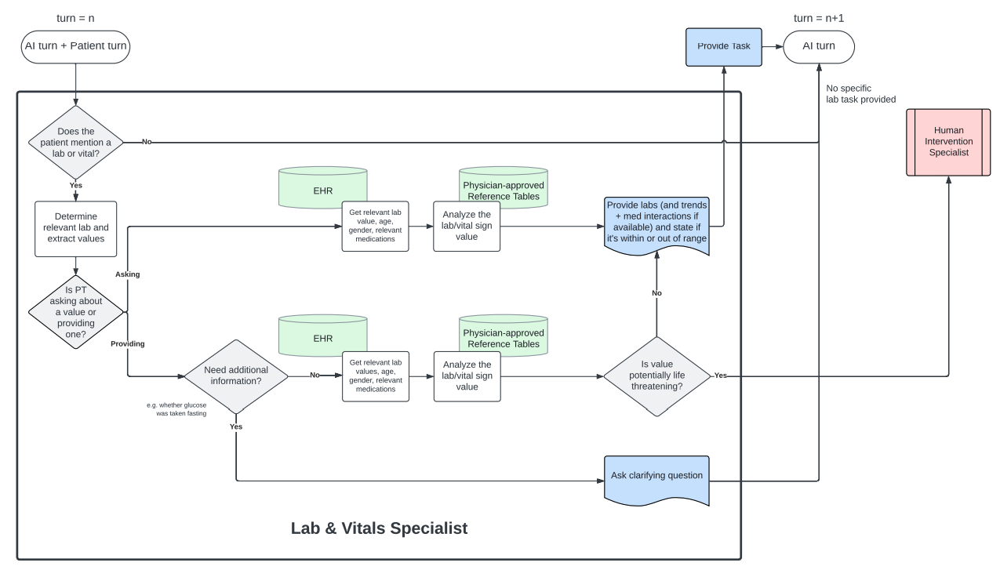
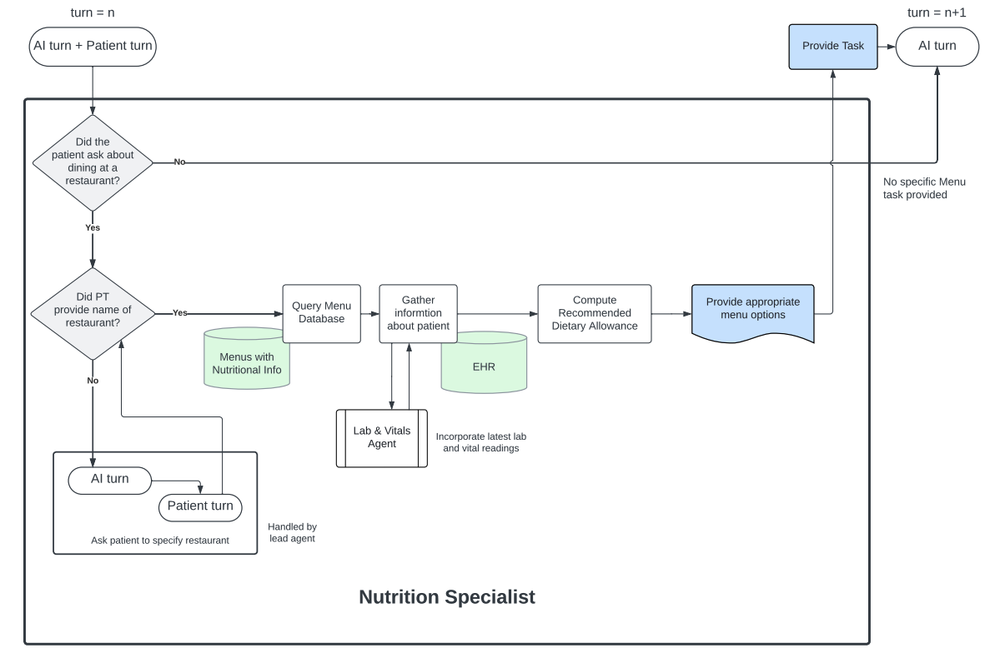
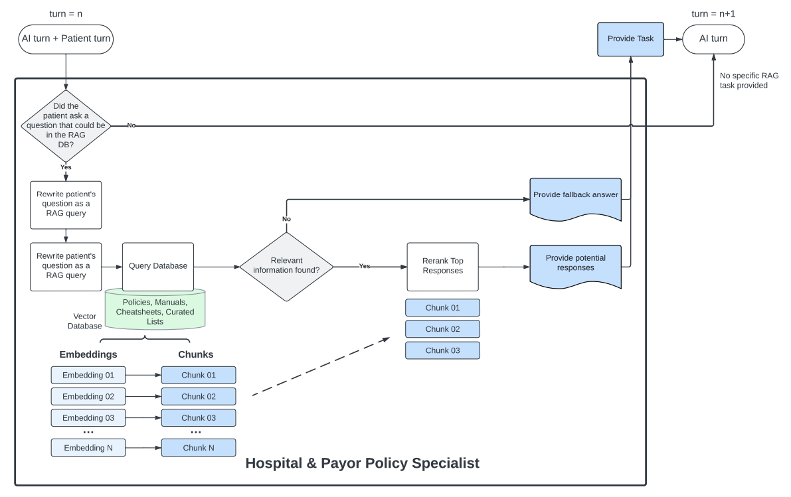
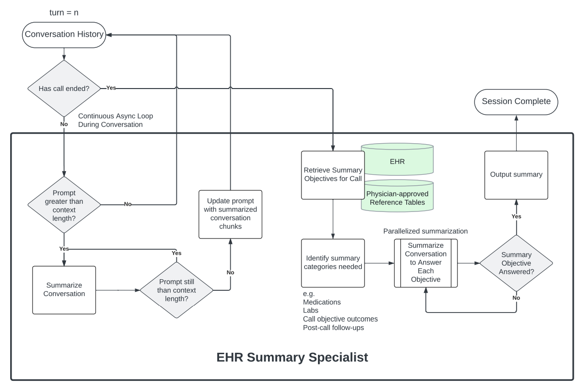
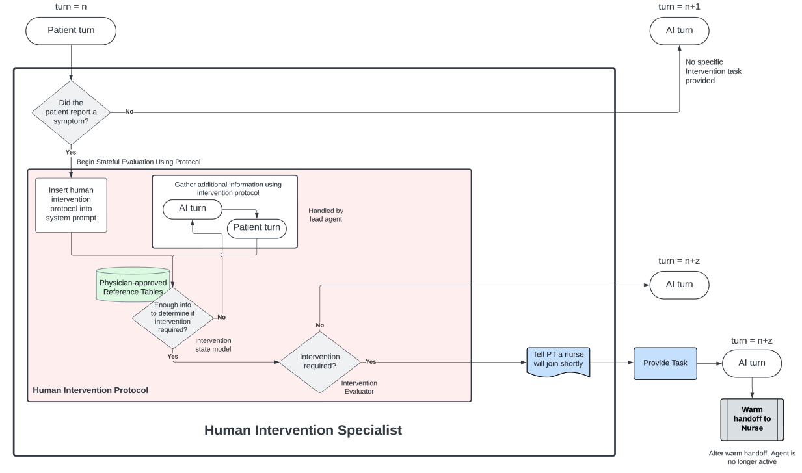

[論文分析] Polaris: A Safety-focused LLM Constellation Architecture for Healthcare
分析目的：
想了解大型的multi-agent實際落地的架構，因此分析此篇論文 link
摘要：
Polaris是一個專注於安全的醫療大型語言模型（LLM）星座系統，旨在實現實時的患者與AI之間的醫療對話。該系統由一個主要負責對話的代理和多個專門處理醫療任務的支持代理組成，這些任務通常由護理人員、社工和營養師完成。該系統的主要目的是提供非診斷性醫療服務，確保患者在接受醫療過程中得到安全且準確的回應，並通過增強的醫療推理能力減少AI系統的幻覺現象。

Keypoint:
- 整個服務是透過電話/語音實現，多倫語音對話
- Input: 自動語音識別（ASR）
- Output: 語音合成（TTS）
- Agent監控整個對話流程及Agent併行的設計
- 檢查token長度是否超過，超過進行summary
- 對話結束，EHR Summary agent 將對話轉成結構化資料
- 使用大量對話與料去訓練model
Polaris Healthcare Agents 分析
每個代理使用的模型不同： 
- Primary Agent: 負責管理整個對話流程，使用LLM來進行醫療推理和對話。單輪對話約20分鐘。
- Privacy & Compliance Specialist: 驗證患者身份後才會加載PHI信息。 
- Checklist Specialist: 與Primary Agent併行工作，確認患者的任務是否完成。
- 藥物代理： 監控對話中的藥物使用情況，檢測錯誤並提供劑量建議。 
- Lab & Vitals Specialist: 檢索並比較最新的實驗室結果與之前的記錄。 
- Nutrition Specialist: 根據對話歷史，提供膳食攝入量建議和營養指導。 
- Hospital & Payor Policy Specialist: 使用檢索增強生成（RAG）模型簡化政策問題。 
- EHR Summary Specialist: 提取對話中的臨床字段並填入電子健康記錄（EHR）。 
- Human Intervention Specialist: 在對話過程中檢測症狀並決定是否需要人工干預。 